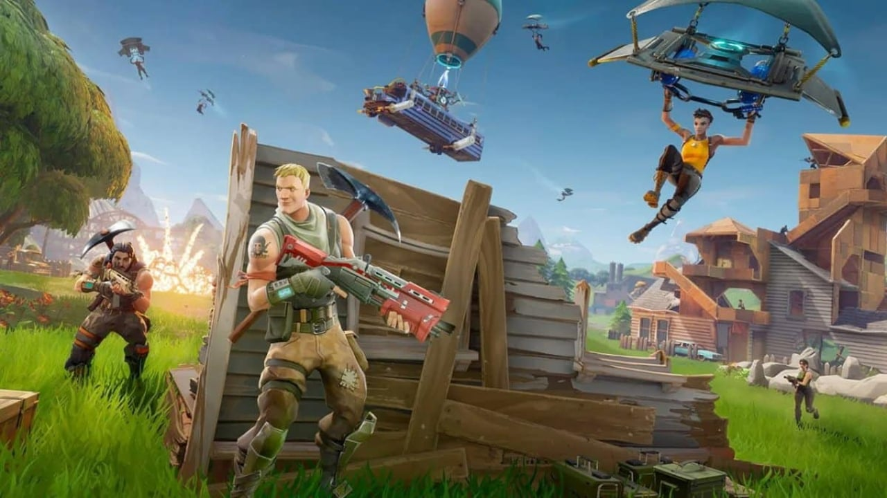

Fortnite é um jogo eletrônico multijogador online revelado originalmente em 2011, desenvolvido pela Epic Games e lançado como diferentes modos de jogo que compartilham a mesma jogabilidade e motor gráfico de jogo.
Os modos de jogo incluem Fortnite: Save the World, um jogo cooperativo pay-to-play de sobrevivência para até quatro jogadores, que devem lutar contra carcaças (zumbis) e defender objetos com fortificações que eles podem construir, e Fortnite Battle Royale, um jogo free-to-play do gênero battle royale, onde até 100 jogadores lutam em espaços cada vez menores para serem a última pessoa ou time vencedor.
Fortnite: Save the World é projetado como um jogo de jogador-versus-ambiente, com quatro jogadores cooperando em direção a um objetivo comum em várias missões. O jogo se passa depois que uma tempestade de fluidos aparece em toda a Terra, fazendo com que 98% da população desapareça e os sobreviventes sejam atacados por zumbis. Os jogadores assumem o papel de comandantes de abrigos de base, coletando recursos, salvando sobreviventes e defendendo equipamentos que ajudam a coletar dados sobre a tempestade ou empurrar a tempestade para trás. Das missões, os jogadores recebem uma série de itens no jogo, que incluem personagens heroicos, esquemas de armas e armadilhas, tudo o que pode ser melhorado através da experiência adquirida para melhorar seus atributos.
Fortnite Battle Royale é um modo de jogo do gênero battle royale para até 100 jogadores, jogando sozinho ou em grupos de dois a quatro amigos. Os jogadores deixam um "ônibus de batalha" que cruza o mapa do jogo sem nenhuma arma. Quando eles pousam, eles devem procurar por armas, itens e recursos, evitando de serem mortos enquanto atacam outros jogadores. Ao longo de uma rodada, a área segura do mapa diminui de tamanho devido a uma tempestade que chega; os jogadores fora daquela área recebem dano e podem ser mortos. Isso força os jogadores remanescentes a irem para um espaço mais apertado e incentiva os encontros dos jogadores. O último jogador ou time vivo é o vencedor.
